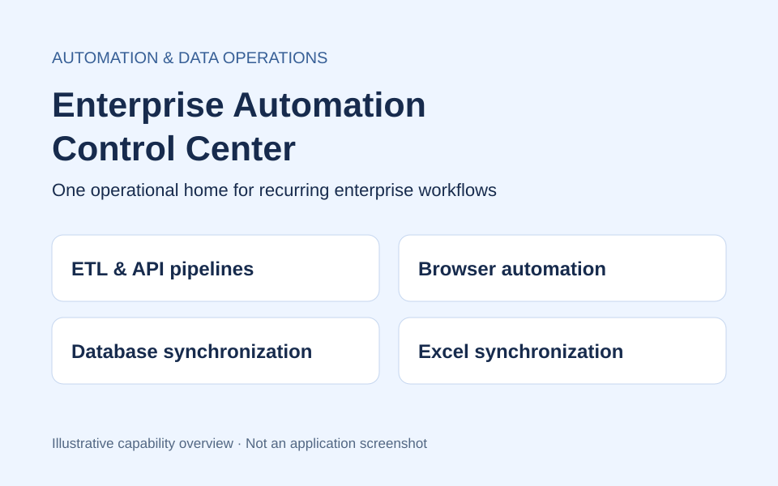

A control panel for recurring enterprise automation
Enterprise Automation Control Center brings data pipelines and browser automation into a shared management application. I created it at PT ABC Kogen Dairy to configure, trigger, and inspect recurring ETL, database synchronization, API ingestion, Excel synchronization, and web-automation work.
Its scope is wider than browser scripting. The application provides an operational layer over different execution paths: Airflow-backed data pipelines and robot workers running browser workflows.
Give recurring integrations an operational home
Automation becomes difficult to maintain when each new source requires a separate script and each failure needs a different way to investigate it. Sources also behave differently: an Excel file needs sheet and column rules, a database needs connection and synchronization settings, and a browser workflow needs ordered tasks and execution context.
The platform brings those configurations and operational views into one place while preserving the differences between the execution engines. A trigger, a running task, and a successful data load remain distinct events.
Key features
- ETL and Excel pipeline configuration
A configuration wizard captures source folders, target tables, sheet rules, column mappings, data types, fixed values, and row filters. Supported load choices include append, upsert, and replacement.
- Database and API synchronization
Dedicated source-management workflows configure database and API pipelines. Individual sources or report groups can be triggered through the control panel.
- Browser automation workflows
Workflows contain ordered tasks, reusable scripts, and mapped credential context. Robot workers pick up queued runs and execute browser steps with configured retry behavior.
- Airflow integration
The application manages configuration and triggers the relevant pipeline runs, while Airflow handles the data-execution path. The Excel integration can read SharePoint sources and move successfully processed files to an archive folder.
- Run visibility and investigation
Pipeline run history and summaries expose execution evidence. Browser workflows record task logs, completion or failure, and diagnostic screenshots on exhausted task failures; live status is broadcast to the application.
- Role-based management
Permissions distinguish viewing, configuring, and triggering pipelines. Workflow credentials are mapped to the workflows that use them rather than treated as ordinary task content.
Configure, execute, and inspect
The control panel manages configuration and operations. Airflow executes the pipeline path; robot workers execute browser workflows. These engines retain different execution models behind the shared application.
An operator configures the source or workflow, selects the intended destination and processing behavior, and uses the appropriate execution path. A queued or triggered run then produces its own execution record for review.
A concrete example: Excel synchronization
The SharePoint-to-database path shows why configuration matters. A source can use a stable sheet name or a date-based sheet rule, map only the relevant columns, apply row filters, and load according to the selected table behavior.
The selected load mode changes the meaning of a run. Append adds rows; upsert matches configured keys; replacement reloads the intended target. Pipeline configuration must reflect that business intent.
My contribution at PT ABC Kogen Dairy
I created the control-panel application and its integrations across web automation and data synchronization. The work includes configurable pipeline management, workflow/task execution, Airflow integration, source management, and the run-history views used to inspect the work.
A central design decision is to move recurring source differences into configuration where the execution model supports it. Adding a source or changing a column mapping should not require cloning a complete ingestion script.
For browser automation, the work keeps the workflow definition, worker execution, mapped credentials, and task evidence connected so an operator can trace a run beyond its overall status.
A management layer over execution engines
The application uses an Angular/TypeScript frontend and Express services running on Bun, with PostgreSQL-backed configuration and execution records accessed through Prisma and Knex. Airflow and Python handle the data-pipeline path, while Puppeteer-based workers handle browser workflows.
SharePoint integration provides the Excel source path. Database and API source modules extend the same operational application to other ingestion work. Browser run status is sent through WebSockets, with logs and screenshots retained as execution evidence.
The architecture keeps configuration, execution, and reporting separate. The web application manages the source definition and requests work; the execution engine performs it; execution records provide the evidence used to review the result.
Make automation easier to operate and extend
The platform gives recurring automation a common place to be configured and reviewed, covering data movement as well as browser workflows. Configuration-driven ingestion supports reusable processing, while execution records help operators distinguish a requested run from a completed result.
The main engineering lesson is to standardize the operational experience without assuming every workload should run through the same engine. A browser task and a database load have different failure modes, but both need clear configuration, execution state, and evidence.